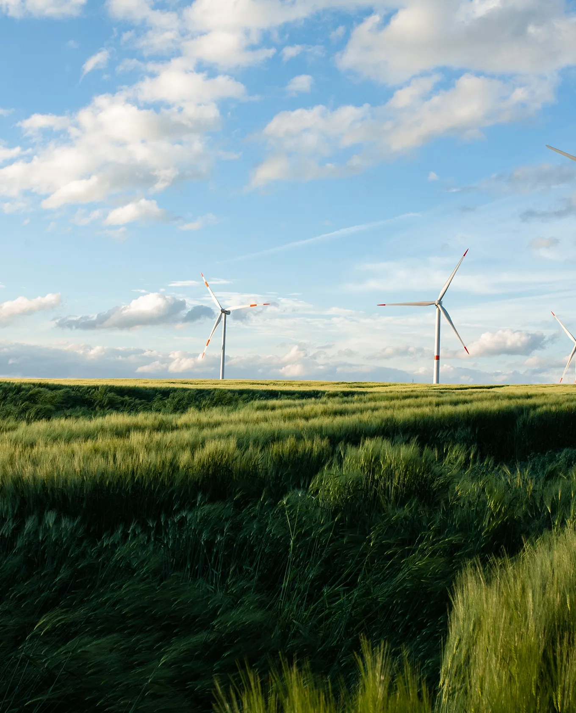
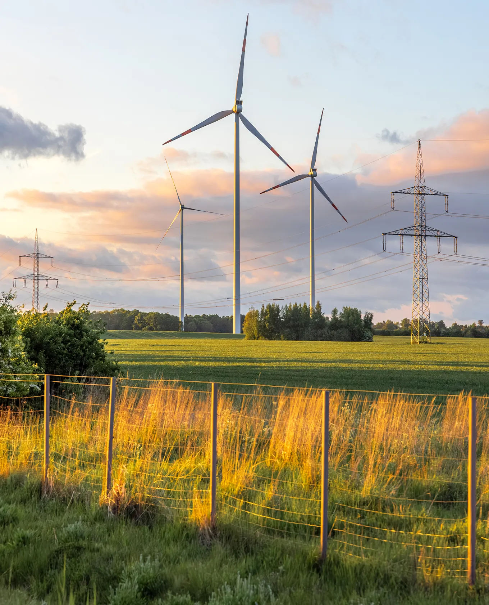

Planejamento & Obras
Levantamento Topográfico
Medição planialtimétrica detalhada do terreno para projetos arquitetônicos, locação de obras, loteamentos e infraestrutura urbana.
Levantamentos, georreferenciamento e regularização de imóveis rurais e urbanos. Atuação rigorosa em campo com documentação completa em escritório para aprovações.




Fornecemos segurança técnica e documentação especializada para garantir o valor, os limites territoriais e a completa legalidade da sua propriedade.
Medição planialtimétrica detalhada do terreno para projetos arquitetônicos, locação de obras, loteamentos e infraestrutura urbana.
Fixação técnica dos limites no Sistema Geodésico Nacional, evitando litígios de sobreposição e garantindo rastreabilidade do imóvel rural.
Atuação técnica na elaboração de dossiês para unificações, desmembramentos, retificação de área e processos em prefeituras e cartórios.
Acompanhamento técnico rígido do primeiro diagnóstico até a liberação final do registro no cartório.
Nossa metodologia elimina a burocracia e a insegurança. Conduzimos cada projeto de forma analítica para que exista total previsibilidade do campo à documentação.
Análise investigativa das matrículas e entendimento fotogramétrico da área para traçarmos a melhor abordagem técnica.
Operação no terreno utilizando receptores RTK de alta precisão e Drones, aferindo os vértices do imóvel com exatidão.
Geoprocessamento de dados para emissão de plantas, memoriais descritivos rigorosos e geração de dossiês cartográficos.
Trâmites burocráticos simplificados via encaminhamento direto aos sistemas como SIGEF/INCRA, Prefeituras e Ofício de Registro.
Apresentamos um histórico sólido e uma infraestrutura completa para que você tenha a tranquilidade de estar sendo guiado pelos melhores especialistas.
Trabalhamos da visita técnica in loco com equipamentos próprios à finalização do rígido dossiê registral em nosso escritório.
Nossas métricas e plantas atendem estritamente as portarias e regulamentações do SIGEF, INCRA e prefeituras locais.
Organizamos o acervo final com excelência burocrática, previnindo devoluções por insuficiência de documentação no cartório.
Domínio técnico comprovado em vastas glebas agrícolas e na densa regulação fundiária de áreas loteadas urbanas.
"Acreditamos que todo patrimônio exige responsabilidade técnica. Unimos o rigor pragmático do campo à burocracia do escritório para salvaguardar a sua propriedade contra inconformidades."
Muito além de medir terras, operamos um núcleo técnico focado para solucionar o seu passivo documental e garantir segurança de ponta a ponta.
Nenhum levantamento sai do nosso gabinete sem que passe por uma auditoria criteriosa de viabilidade técnica e total conformidade com a Lei.
Operamos com Receptores RTK de dupla frequência e Drones de última geração para extrair os níveis de precisão incontestáveis em campo.
O projeto caminha de mãos dadas com o cliente. Entregamos clareza passo a passo, sem surpresas técnicas ou atrasos ocultos.
"Acreditamos no rigor cartorial aliado à precisão do campo. Cada vetor demarcado e cada projeto validado é a segurança material do seu patrimônio."